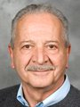
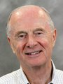
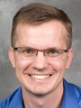
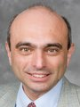

Welcome to Theoretical Computer Science at Brown.
Faculty members
We are proud to have a Gödel prize winner and ACM fellow (Maurice Herlihy), and three ACM and IEEE fellows (Franco Preparata, John Savage and Eli Upfal).


- 
- 


- Maurice Herlihy: Distributed and parallel computing
- Sorin Istrail: Computational biology, algorithms
- Philip Klein: Algorithms on graphs and networks
- Franco Preparata: Combinatorial computing, algorithms, computational biology
- Anna Lysyanskaya: Cryptography
- John Savage: Nanotechnology
- Eli Upfal: Algorithms, probability and applications
- Paul Valiant: Algorithms for big data, scientific computing
Faculty friends

- 
- 
- Amy Greenwald: Artificial intelligence
- Ben Raphael: Computational Biology
- Roberto Tamassia: Security
Postdocs
PhD Students
PhD Alumni (since 2006)
- Irina Calciu (PhD 2015; Postdoctoral Researcher, VMWare Research)
- Hammurabi Mendes (PhD 2015; Postdoctoral Researcher, University of Rochester)
- Derek Aguiar (PhD 2014; Postdoctoral Researcher, Princeton University)
- Foteini Baldimtsi (PhD 2014; Postdoctoral Researcher, Boston University)
- David Eisenstat (PhD 2014; Software Engineer, Google)
- Matteo Riondato (PhD 2014; Researcher, Two Sigma)
- Feng-Hao Liu (PhD 2013; Postdoctoral Researcher, University of Maryland)
- Shay Mozes (PhD 2012; Senior Lecturer, IDC Herzliya)
- Ryan Tarpine (PhD 2012; Software Engineer, Google)
- Warren Schudy (PhD 2010; Software Engineer, Google Research)
- Eric Rachlin (PhD 2010; Vice President, Body Labs)
- Yossi Lev (PhD 2010; Principal Member, Oracle Labs)
- Alptekin Küpçü (PhD 2010; Assistant Professor, Koç University)
- Aparna Das (PhD 2010; Assistant Professor, Le Moyne College)
- Melissa Chase (PhD 2008; Researcher, Microsoft Research)
- Mira Belenkiy (PhD 2008)
- Glencora Borradaile (PhD 2007; Associate Professor, Oregon State University)
- Aris Anagnostopoulos (PhD 2006; Associate Professor, Sapienza University of Rome)
Courses recently offered
- CSCI1450: Introduction to Probability and Computing
- CSCI1510: Introduction to Cryptography and Computer Security
- CSCI1550: Probabilistic Methods in Computer Science
- CSCI1570: Design and Analysis of Algorithms
- CSCI1810: Computational Molecular Biology
- CSCI1820: Algorithmic Foundations of Computational Biology
- CSCI1950-H: Computational Topology
- CSCI2500-B: Optimization Algorithms for Planar Graphs
- CSCI2510: Approximation Algorithms
- CSCI2730: Programming Language Theory
- CSCI2750: Topics in Parallel and Distributed Computing
- CSCI2950-C: Algorithms for Cancer Genomics
- CSCI2951-N: Advanced Algorithms in Computational Biology
- CSCI2951-S: Distributed Computing through Combinatorial Topology
See the full course listing here.